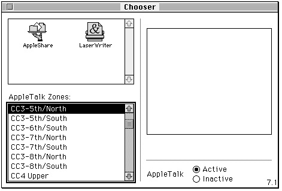
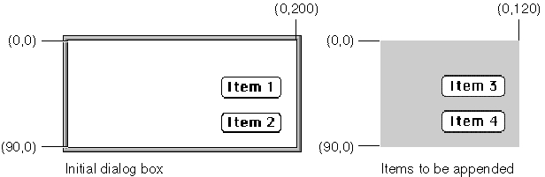
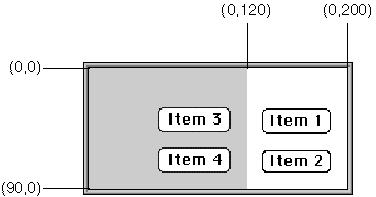
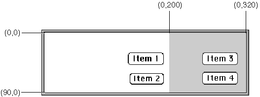
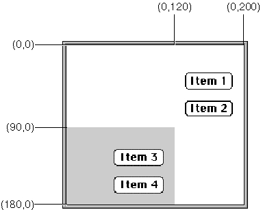
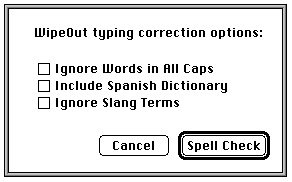

Legacy Document
Important: The information in this document is obsolete and should not be used for new development.
Important: The information in this document is obsolete and should not be used for new development.


Manipulating Items
In many cases, you won't have to make any changes to alerts or dialog boxes after you define them in your resource file. However, if you should want to modify an item, you can use several Dialog Manager routines to do so.Figure 6-25 A selected scrolling list

For example, you can use the
ParamTextprocedure to supply text strings (such as document titles) to alert and dialog boxes dynamically. For most other types of item manipulation, you must first call theGetDialogItemprocedure to get the information about the item. You then use other routines to manipulate that item. For example, you can use theSetDialogItemprocedure to change the item, or--to get a text string that the user has entered in an editable text item after clicking the OK button--you can use theGetDialogItemTextprocedure.The Dialog Manager routines for manipulating items are summarized in the
following list.
Routine Description AppendDITL Adds items to a dialog box. CountDITL Counts the number of items in a dialog box. FindDialogItem Finds an item that contains a specified point within a dialog box. GetAlertStage Returns the stage of the last occurrence of an alert. GetDialogItem Returns the item type, the display rectangle, and the control handle or application-defined procedure of a given item in a dialog box. GetDialogItemText Returns the text of a given editable text or static
text item.HideDialogItem Hides the given item. ParamText Substitutes up to four different text strings in static
text items.ResetAlertStage Resets the stage of the last occurrence of an alert. SelectDialogItemText Selects the text of an editable text item. SetDialogItem Sets the item type and the display rectangle of an item, or (for application-defined items) the draw procedure
of an item.ShortenDITL Removes items from a dialog box. ShowDialogItem Redisplays the item previously hidden by HideDialogItem.The next several sections describe the most frequently used of these routines. The next section, "Changing Static Text," explains the use of the
ParamTextprocedure to manipulate the text in static text items. "Getting Text From Editable Text Items" beginning on page 6-44 describes how to use theGetDialogItemTextprocedure
to determine what the user types in an editable text item. Using theAppendDITLprocedure is explained in "Adding Items to an Existing Dialog Box" beginning on page 6-46. "Using an Application-Defined Item to Draw the Bold Outline for a Default Button" beginning on page 6-50 describes how to useSetDialogItemto install application-defined items. For additional information about all of the previously listed routines, see "Manipulating Items in Alert and Dialog Boxes" beginning on page 6-120 and "Handling Text in Alert and Dialog Boxes" beginning on page 6-129.Changing Static Text
As previously explained, it is often useful to state the name of a document in an alert box or a dialog box. For example, Figure 6-26 shows an alert box that an application might display when the user closes a window that contains unsaved changes.Figure 6-26 An alert box that displays a document name
You can use the
ParamTextprocedure to supply the names of document windows to your alert and dialog boxes dynamically, as illustrated in the application-defined routineMyCloseDocumentshown in Listing 6-9.Listing 6-9 Using the
ParamTextprocedure to substitute text strings
PROCEDURE MyCloseDocument (myData: MyDocRecHnd); VAR title: Str255; item: Integer; docWindow: WindowPtr; event: EventRecord; {dummy parameter for calling DialogSelect} myErr: OSErr; BEGIN docWindow := FrontWindow; {point to active window} IF (myData^^.windowDirty) THEN {document has been changed} BEGIN GetWTitle(docWindow, title); {get title of window} MyStringCheck(title); ParamText(title, '', '', ''); {pass the title in 1st parameter} DoActivate(docWindow, FALSE, event); {deactivate the active window} item := CautionAlert(kSaveAlertID, @MyEventFilter); {display alert box} IF item = kCancel THEN Exit(MyCloseDocument); IF item = kSave THEN DoSaveCmd; {save the document} myErr := DoCloseFile(myData); {close the file} END; {let click in Don't Save fall through} CloseWindow(docWindow); DisposPtr(Ptr(docWindow)); END;In this example, the Window Manager functionFrontWindowreturns a pointer to
the active window. Another Window Manager function,GetWTitle, returns the title
of that window. The MyCloseDocument routine passes this string to theParamTextprocedure, which takes four text strings as parameters. In this example, only one string is needed (the window title), which is passed in the first parameter; empty strings are passed for the remaining three parameters.You can use
ParamTextto supply up to four text strings for a single alert or dialog box. In the item list resource for the alert or dialog box, specify where each of these strings should go by inserting the special characters^0through^3in any of the items where you can specify text. TheParamTextprocedure dynamically replaces^0with the string you pass in its first parameter,^1with the string in the second parameter, and so forth, when you display the alert or dialog box.
Listing 6-10 shows a portion of an item list resource. When the application calls
- IMPORTANT
- To avoid recursion problems in versions of system sofware earlier than 7.1, you have to ensure that you do not include the characters
^0through^3in any strings you pass toParamText. This is why MyCloseDocument uses another application-defined routine,MyStringCheck, to filter these characters out of the window titles passed toParamText.
CautionAlert, the Dialog Manager uses the first parameter passed previously to theParamTextprocedure to replace the characters^0in the static text with the title of the
document window.Listing 6-10 Specifying where
ParamTextshould substitute text in an alert box message
resource 'DITL' (kSaveAlertID, purgeable) { { /*Save button information goes here*/ /*Cancel button information goes here*/ /*Don't Save button information goes here*/ {10, 75, 42, 348}, StaticText { /*ask the user to save changes to the document--*/ disabled, /* filename inserted with ParamText*/ "Save changes to the SurfWriter document "^0" before closing?" }, /*help item information goes here*/ } };Getting Text From Editable Text Items
The application displaying the modeless dialog box shown in Figure 6-27 uses theGetDialogItemandGetDialogItemTextprocedures after the user clicks the Change button.Figure 6-27 Two editable text items in a modeless dialog box
This dialog box prompts the user for two text strings: one to search for and another
to take the place of the first string. Listing 6-11 shows the item list resource for this
dialog box. The fifth item in the list is the editable text item where the user enters the text string being sought; the sixth item is the item where the user enters the replacement
text string.Listing 6-11 Specifying editable text items in an item list
resource 'DITL' (kGlobalChangesDITL, purgeable) { { /*ITEM NO. 1*/ {70, 213, 90, 271}, Button {enabled,"Change"}, /*ITEM NO. 2*/ {70, 142, 90, 200}, Button {enabled,"Stop"}, /*ITEM NO. 3*/ {10, 23, 27, 98}, StaticText {disabled, "Find What:"}, /*ITEM NO. 4*/ {40, 23, 57, 98}, StaticText {disabled,"Change To:"}, /*ITEM NO. 5*/ {10, 117, 27, 271}, EditText {disabled, ""}, /*ITEM NO. 6*/ {40, 117, 57, 271}, EditText {disabled, ""} /*ITEM NO. 7: for drawing outline around Change button*/ {63, 205, 97, 278}, UserItem {disabled, }, /*ITEM NO. 8: help item goes here*/ } };Listing 6-12 shows how the application handles a click in the Change button. (Subsequent sections of this chapter explain how to handle events in a modeless
dialog box.)Listing 6-12 Getting the text entered by the user in an editable text item
PROCEDURE MyHandleModelessDialogs(theEvent: EventRecord); VAR myDialog: DialogPtr; itemHit, itemType: Integer; searchStringHandle: Handle; replaceStringHandle: Handle; searchString: Str255; replaceString: Str255; itemRect: Rect; BEGIN {use DialogSelect, then determine whether the event occurred } { in the Global Changes dialog box; if so, respond to mouse } { clicks as follows} CASE itemHit OF kChange: {user clicked the Change button} BEGIN GetDialogItem(myDialog, kFind, itemType, searchStringHandle, itemRect); GetDialogItemText(searchStringHandle, searchString); GetDialogItem(myDialog, kReplace, itemType, replaceStringHandle, itemRect); GetDialogItemText(replaceStringHandle, replaceString); {get a handle to the Stop button} GetDialogItem(myDialog, kStop, itemType, itemHandle, itemRect); {make the Stop button active during the operation} HiliteControl(ControlHandle(itemHandle), 0); {get a handle to the Change button} GetDialogItem(myDialog, kChange, itemType, itemHandle, itemRect); {make the Change button inactive during the operation} HiliteControl(ControlHandle(itemHandle), 255); DoReplace(searchString, replaceString); {when the operation is complete, dim Stop and make } { Change active here} END; kStop: {user clicked the Stop button} BEGIN {cancel operation, then make Stop button } { inactive and Change button active again} END; END; END;In Listing 6-12, when the user clicks the Change button, theGetDialogItemprocedure returns a handle to the item containing the search string. Because this is a handle to an editable text item, the application can pass the handle to theGetDialogItemTextprocedure, which then returns the item's text string in its second parameter. These two procedures are then used to get the string in the item containing the replacement string. These two strings are then passed to an application-defined routine that replaces all instances of the first string with the characters of the second string. Note that when the user clicks Change, the Control Manager procedureHiliteControlis used to make the Stop button active and to make the Change button inactive--that is, dimmed. This indicates that the user can use the Stop button but not the Change button while the change operation is taking place.Adding Items to an Existing Dialog Box
You can dynamically add items to and remove items from a dialog box by using theAppendDITLandShortenDITLprocedures. When you create a dialog box, the Dialog Manager creates a dialog record. The Dialog Manager then reads in the item list resource and stores a handle to it in theitemsfield of the dialog record. Because every dialog box you create has its own dialog record, you can define dialog boxes whose items are defined by the same item list resource. TheAppendDITLandShortenDITLprocedures are especially useful if several dialog boxes share the same item list resource and you want to add or remove items as appropriate for individual dialog boxes.When you call the
AppendDITLprocedure, you specify a dialog box, and you specify a new item list resource to append to the dialog box's existing item list resource. You also specify where the Dialog Manager should display the new items. You can use one of these constants to designate whereAppendDITLshould display the appended items:
CONST overlayDITL = 0; {overlay existing items} appendDITLRight = 1; {append at right} appendDITLBottom = 2; {append at bottom} TYPE DITLMethod = Integer;Figure 6-28 illustrates an existing dialog box and a pair of items to be appended.Figure 6-28 An existing dialog box and items to append

If you specify the
overlayDITLconstant,AppendDITLsuperimposes the appended items over the dialog box. That is,AppendDITLinterprets the coordinates of the display rectangles for the appended items (as specified in their item list resource) as local coordinates within the dialog box. Figure 6-29 shows the result of overlaying the items upon the dialog box illustrated in Figure 6-28.Figure 6-29 The dialog box after items are overlaid

If you specify the
appendDITLRightconstant,AppendDITLappends the items to the right side of the dialog box, as illustrated in Figure 6-30, by positioning the display rectangles of the appended items relative to the upper-right coordinate of the dialog box. TheAppendDITLprocedure automatically expands the dialog box to accommodate the new dialog items.Figure 6-30 The dialog box after items are appended to the right

If you specify the
appendDITLBottomconstant,AppendDITLappends the items to the bottom of the dialog box, as illustrated in Figure 6-31, by positioning the display rectangles of the appended items relative to the lower-left coordinate of the dialog box. TheAppendDITLprocedure automatically expands the dialog box to accommodate the new dialog items.Figure 6-31 The dialog box after items are appended to the bottom

As an alternative to passing the
overlayDITL,appendDITLRight, or appendDITLBottomconstant, you can pass a negative number toAppendDITL, which appends the items relative to an existing item in the dialog box. The absolute value of this number is interpreted as the item in the dialog box relative to which the new items are to be positioned. For example, if you pass -2 toAppendDITL, the display rectangles of the appended items are offset from the upper-left corner of item number 2 in the dialog box. Figure 6-12 on page 6-22 shows a simple dialog box with two checkboxes. Figure 6-32 shows the same dialog box after an additional item is appended relative to the first checkbox, so that the new item appears between the two existing checkboxes.Figure 6-32 A dialog box with an item appended relative to an existing item

The application-defined routine called
DoSpellBoxWithSpanish, which is shown in Listing 6-13 on the next page, illustrates the use of theAppendDITL procedure to addthe new item.Listing 6-13 Appending an item to an existing dialog box
FUNCTION DoSpellBoxWithSpanish: OSErr; VAR theDialog: DialogPtr; myNewItem: Handle; docWindow: WindowPtr; event: EventRecord; BEGIN theDialog := GetNewDialog(kSpellCheckID, NIL, Pointer(-1)); IF theDialog <> NIL THEN BEGIN myNewItem := GetResource('DITL', kSpanishDITL); IF myNewItem <> NIL THEN BEGIN AppendDITL(theDialog, myNewItem, kAppendItem); {kAppendItem = -3} ReleaseResource(myNewItem); docWindow := FrontWindow; {get the front window} {if there's a front window, deactivate it} IF docWindow <> NIL THEN DoActivate(docWindow, FALSE, event); ShowWindow(theDialog); {show dialog box with appended item} MyAdjustMenus; {adjust menus as needed} REPEAT ModalDialog(@MyEventFilter, itemHit); {handle clicks in checkboxes here} UNTIL ((itemHit = kSpellCheck) OR (itemHit = kCancel)); {handle clicks in buttons here} DisposeDialog(theDialog); DoSpellBoxWithSpanish := kSuccess; END ELSE DoSpellBoxWithSpanish := kFailed; END ELSE DoSpellBoxWithSpanish := kFailed; END;TheDoSpellBoxWithSpanishroutine usesGetNewDialogto create a dialog box.
As you'll see in Listing 6-14, the dialog resource passed toGetNewDialoghas a resource ID of 402, and this dialog resource in turn specifies an item list resource with resource ID 402. TheDoSpellBoxWithSpanishroutine then uses the Resource Manager functionGetResourceto obtain a handle to a second item list resource; this item list resource contains the "Include Spanish Dictionary" checkbox. By setting a value of -3 in the last parameter ofAppendDITL, theDoSpellBoxWithSpanishroutine appends the items in the second item list resource relative to item number 3 (the "Ignore Words in All Caps" checkbox) in the dialog box. Listing 6-14 shows the dialog resource for the dialog box, its regular item list resource, and the item list resource thatAppendDITLadds to it.Listing 6-14 Rez input for a dialog box and the item appended to it
# define kSpellCheckID 402 /*resource ID for Spell Check dialog box*/ # define kSpellCheckDITL 402 /*resource ID for item list resource*/ # define kSpanishDITL 257 /*resource ID for item list resource to append*/ # define kAppendHelp 257 /*resource ID for 'hdlg' for appended item*/ resource 'DLOG' (kSpellCheckID, purgeable) {/*Spell Check dialog box*/ {62, 184, 216, 448}, dBoxProc, /*make it modal*/ invisible, /*make it initially invisible*/ noGoAway, 0x0, kSpellCheckDITL, "Spellcheck Options", alertPositionParentWindow /*place over the document window*/ }; resource 'DITL' (kSpellCheckDITL, purgeable) { /*items for Spell Check dialog box*/ /*ITEM NO. 1, the "Spell Check" button, goes here*/ /*ITEM NO. 2, the "Cancel" button, goes here*/ /*ITEM NO. 3*/ {48, 23, 67, 202}, CheckBox {enabled, "Ignore Words in All Caps"}, /*ITEM NO. 4*/ {83, 23, 101, 196}, CheckBox {enabled, "Ignore Slang Terms"}, /*static text, help item, etc. go here*/ }; /*add this item list resource to Spell Check dialog box only when */ /* Spanish language dictionary is installed*/ resource 'DITL' (kSpanishDITL, purgeable) { { {18, 0, 36, 209},CheckBox {enabled,"Include Spanish Dictionary"}, {0,0,0,0}, HelpItem {disabled, HMScanAppendhdlg{kAppendHelp}} /*help*/ } };The dialog resource specifies that the dialog box is invisible so that the application
can add the new item to the dialog box before displaying it. In Listing 6-13, theDoSpellBoxWithSpanishroutine uses the Window Manager procedureShowWindowto display the dialog box after its new item has been appended. ("Displaying Alert and Dialog Boxes" beginning on page 6-61 describes more fully
how to display dialog boxes.)The appended item list resource includes a help item that causes the Help Manager to use the help resource associated with that item list resource in addition to the help resource originally associated with the dialog box. See the chapter "Help Manager" in Inside Macintosh: More Macintosh Toolbox for information about using the
HMScanAppendhdlgidentifier in a help item.Listing 6-13 uses the Resource Manager procedure
ReleaseResource. TheAppendDITLprocedure modifies the contents of the dialog box (for instance, by enlarging it). To use an unmodified version of the dialog box at a later time, your application needs to useReleaseResourceto release the memory occupied by the appended item list. Otherwise, if your application callsAppendDITLto add items to that dialog box again, the dialog box will remain modified by your previous call--for example, it will still be longer at the bottom if you previously used theappendDITLBottom constant.When you can call the
ShortenDITLprocedure to remove items from the end of a dialog item list, you specify a pointer to the dialog box and the number of items to remove from the end of the item list. Note thatShortenDITLdoes not automatically resize the dialog box; you can use the Window Manager procedureSizeWindowif you need to resize the dialog box. You can use theCountDITLfunction to determine the number of items in the item list resource for a dialog box.